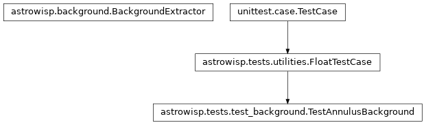
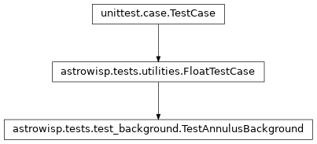

astrowisp.tests.test_background module
Class Inheritance Diagram

Test AstroWISP’s background extraction.
- class astrowisp.tests.test_background.TestAnnulusBackground(methodName='runTest')[source]
Bases:
FloatTestCaseTest background extraction based on annuli around sources.
- static add_flux_around_sources(source_x, source_y, radius, extra_flux, image)[source]
Add extra flux to image pixels within a radius around sources.
- Parameters:
source_x – The x coordinates of the sources to add flux around.
source_x – The y coordinates of the sources to add flux around.
radius – Pixes with centers within this radius get extra flux.
extra_flux – The amount of extra flux per pixel to add.
image – The image to add flux to.
- Returns:
None